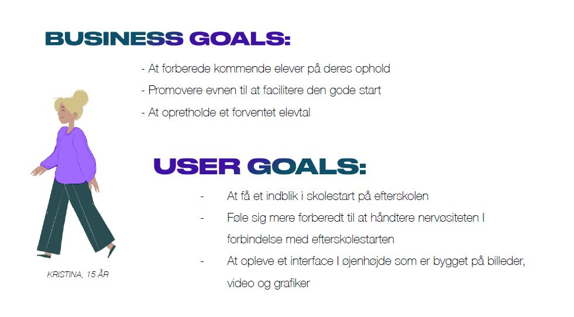
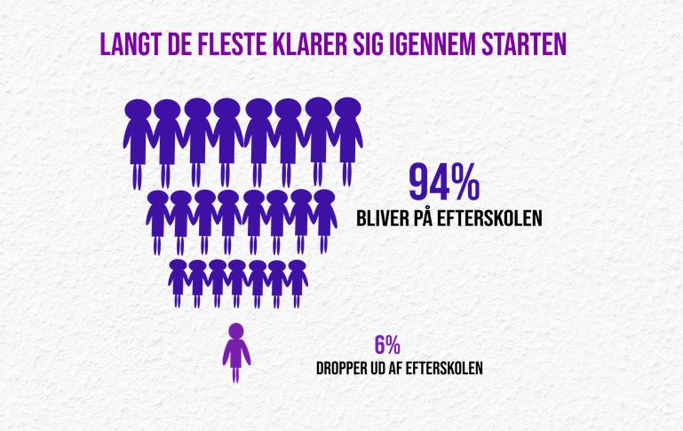

Klank Efterskole
 To see the website click here (Desktop only)
To see the website click here (Desktop only)
At the start of the 2. semester we had a group project where we were tasked to create a web documentary for the boarding school Klank Efterskole. Our case was about starting on a boarding school.
Project length: About a month
Project finished: End of September 2020
Researching the topic
A web documentary is typically an immersive website that tells a story. Our case was about starting on a boarding school and we chose to approach it from the perspective of the nervousness young people feel when starting on a boarding school, in the hopes that our web documentary could calm some of their nerves, so our targeted audience was teenager about or considering to start on a boarding school.
Before we started designing the web documentary, we did some research online and interviewed the principal and some current students, to get an idea of where the design should go and got some content we could use as well. From that research we learned, to no surprise, that teenagers do not like to read that much, they are also really used to social media where a vast amount of entertainment comes through pictures and videos. With those results we wanted to avoid as much text as possible, which we did by implementing videos, sound clips and pictures to say what we wanted to say, we also implemented aspects from social media in the form of hashtags to appeal a bit to the teenagers.
Immersing the user
To immerse the user on the website we start out with a full screen mood
video that plays a sound and have keywords about the school, Klank
Efterskole, and thoughts you might have before starting on the school.
Avoiding to annoy the user with an endless looping sound in the background
I gave the video a mute button.
Interactivity is also a good way to immerse a user, so with a shared
agreement in the group, I made a sound clip play whenever you hover over
the picture of some of the student we interviewed.
Telling a story
For it to feel like we are telling a story, we made each section fill the whole screen, to not distract the user from what we are trying to tell. We also made a short video with some of the current students to support the story.
I should probably explain what story we were trying to tell with this
web documentary. Of course, good storytelling shouldn’t need explanation,
but I’ll let you be the judge of that.
We wanted to say that everyone is nervous when starting on something new,
that everyone is in the same boat, and all of them wants this to be the
best experience yet. So just go talk to others, friendships grow fast on
these kinds of schools.
Misunderstood intention
I would personally get rid of or replace the statistic that shows that only 6% drop out, because as a nervous teenager you are not going to look at that statistic and think “oh only 6%, then I’m totally fine”, you are more likely to think “I’m totally that 6%”.
